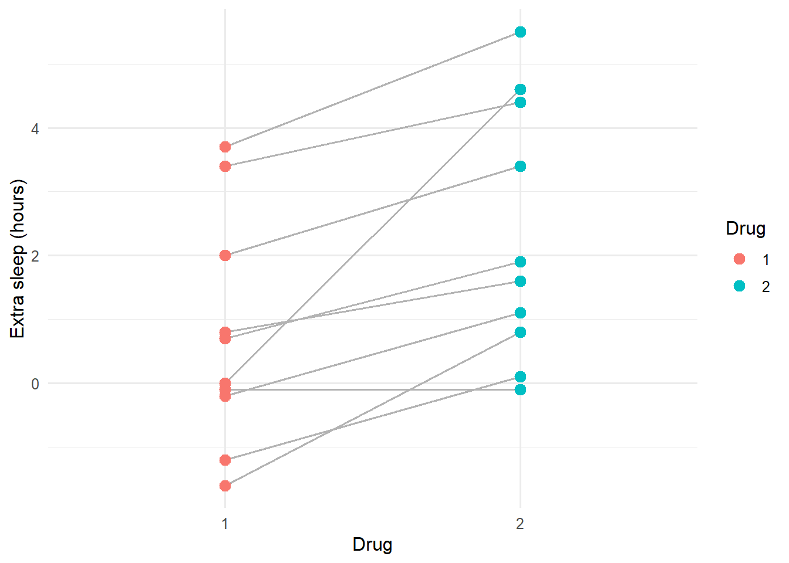
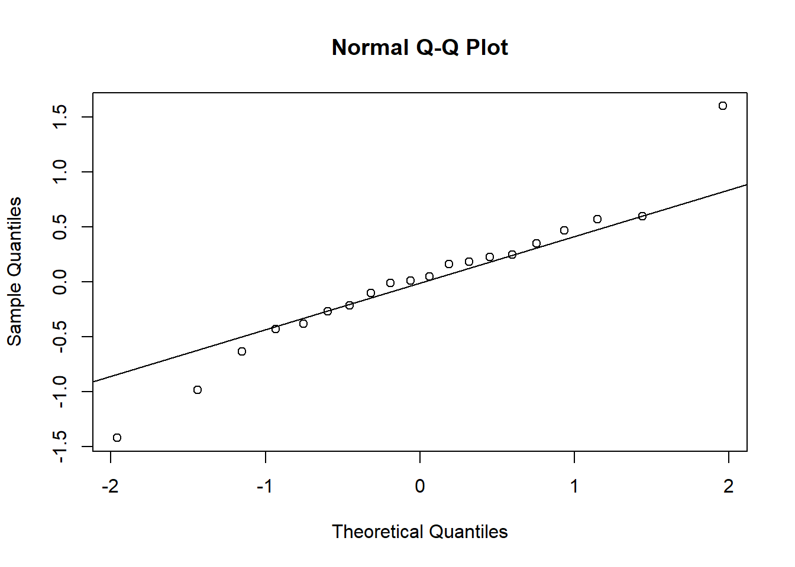
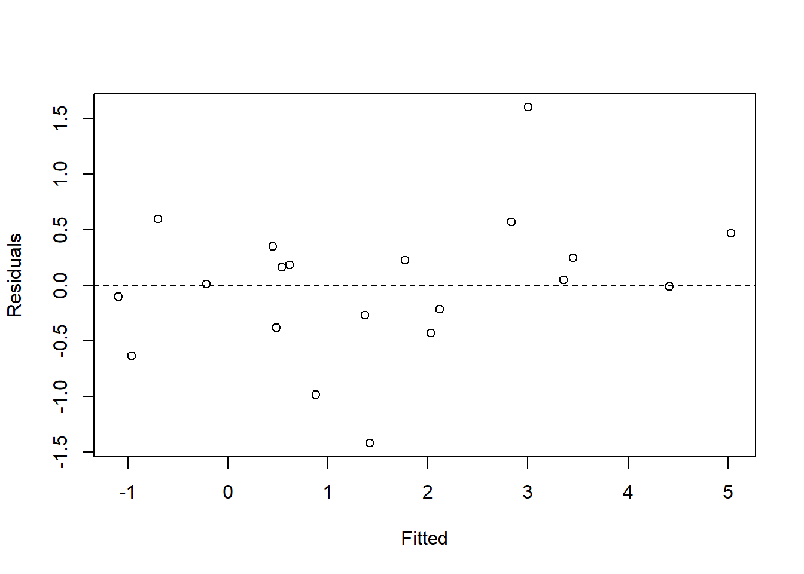

library(tidyverse)
library(broom)
library(broom.mixed)
library(lme4)
set.seed(42)
theme_set(theme_minimal(base_size = 12))Week 2, Session 3 — RCBD and repeated measures → mixed models
Course 2 — #courses
Note
Inference labs use the five-step template: Hypothesis → Visualise → Assumptions → Conduct → Conclude.
Learning objectives
- Fit a randomised complete block design (RCBD) with
aov()and read the block term. - Move from repeated-measures ANOVA to a mixed model with
lme4::lmer(). - Interpret random intercepts as between-subject variance and residuals as within-subject variance.
Prerequisites
Sessions 1–2 of this week.
Background
Blocks and repeated measures share a single idea: some units are more similar to themselves than to the rest of the data. In an RCBD, the block absorbs nuisance variation (plots in a field, litter in an experiment) so the treatment effect can be estimated against a smaller error. In repeated-measures designs, subjects serve as their own blocks because each is measured more than once. In both cases, ignoring the grouping inflates the standard error of the treatment effect and sometimes the Type I error of the test.
Classical RCBD ANOVA treats the block as a fixed factor with a line in the ANOVA table. Modern practice is usually to treat the block (or subject) as a random effect in a mixed model, which separates between-block and within-block variance explicitly and produces standard errors that account for the correlation.
The sleep dataset from base R is a ready-made within-subject design: each of ten subjects received two drugs and reported extra hours of sleep. A paired t-test answers the main question; a mixed model with subject as a random intercept is the same thing with more machinery and more honest diagnostics.
Setup
1. Hypothesis
Using the sleep dataset, does drug group affect extra hours of sleep after accounting for the within-subject pairing?
2. Visualise
ggplot(sleep, aes(group, extra, group = ID)) +
geom_line(colour = "grey70") +
geom_point(aes(colour = group), size = 3) +
labs(x = "Drug", y = "Extra sleep (hours)", colour = "Drug")
Lines track each subject across the two drugs. Most rise from left to right, suggesting drug 2 adds more sleep than drug 1.
3. Assumptions
fit_rcbd <- aov(extra ~ group + Error(ID), data = sleep)
summary(fit_rcbd)
Error: ID
Df Sum Sq Mean Sq F value Pr(>F)
Residuals 9 58.08 6.453
Error: Within
Df Sum Sq Mean Sq F value Pr(>F)
group 1 12.482 12.482 16.5 0.00283 **
Residuals 9 6.808 0.756
---
Signif. codes: 0 '***' 0.001 '**' 0.01 '*' 0.05 '.' 0.1 ' ' 1Residual diagnostics for the mixed version:
fit_lmm <- lmer(extra ~ group + (1 | ID), data = sleep)
qqnorm(resid(fit_lmm)); qqline(resid(fit_lmm))
plot(fitted(fit_lmm), resid(fit_lmm),
xlab = "Fitted", ylab = "Residuals"); abline(h = 0, lty = 2)
4. Conduct
summary(fit_lmm)Linear mixed model fit by REML ['lmerMod']
Formula: extra ~ group + (1 | ID)
Data: sleep
REML criterion at convergence: 70
Scaled residuals:
Min 1Q Median 3Q Max
-1.63372 -0.34157 0.03346 0.31511 1.83859
Random effects:
Groups Name Variance Std.Dev.
ID (Intercept) 2.8483 1.6877
Residual 0.7564 0.8697
Number of obs: 20, groups: ID, 10
Fixed effects:
Estimate Std. Error t value
(Intercept) 0.7500 0.6004 1.249
group2 1.5800 0.3890 4.062
Correlation of Fixed Effects:
(Intr)
group2 -0.324tidy(fit_lmm, conf.int = TRUE, effects = "fixed")# A tibble: 2 × 7
effect term estimate std.error statistic conf.low conf.high
<chr> <chr> <dbl> <dbl> <dbl> <dbl> <dbl>
1 fixed (Intercept) 0.750 0.600 1.25 -0.427 1.93
2 fixed group2 1.58 0.389 4.06 0.818 2.34The random intercept variance captures between-subject differences in baseline sleep; the residual variance captures within-subject noise.
5. Concluding statement
In ten subjects each given both drugs, drug 2 was associated with 1.58 additional hours of extra sleep relative to drug 1 (95% CI from the mixed model: 0.82 to 2.34). The model included a random intercept for subject to account for the pairing.
Point out that the paired t-test, RCBD ANOVA, and mixed model all agree here; the mixed model is useful because it extends cleanly to unbalanced designs and longitudinal data.
Common pitfalls
- Ignoring the pairing and fitting a two-sample t-test.
- Fitting a random slope that the data cannot identify (tiny cluster sizes).
- Reporting only fixed-effect estimates and omitting the variance components.
Further reading
- Pinheiro JC, Bates DM. Mixed-Effects Models in S and S-PLUS.
- Bates D et al. (2015), Fitting linear mixed-effects models using lme4.
- Zuur AF et al. Mixed Effects Models and Extensions in Ecology.
Session info
sessionInfo()R version 4.5.2 (2025-10-31 ucrt)
Platform: x86_64-w64-mingw32/x64
Running under: Windows 11 x64 (build 26200)
Matrix products: default
LAPACK version 3.12.1
locale:
[1] LC_COLLATE=English_Germany.utf8 LC_CTYPE=English_Germany.utf8
[3] LC_MONETARY=English_Germany.utf8 LC_NUMERIC=C
[5] LC_TIME=English_Germany.utf8
time zone: Europe/Berlin
tzcode source: internal
attached base packages:
[1] stats graphics grDevices utils datasets methods base
other attached packages:
[1] lme4_2.0-1 Matrix_1.7-5 broom.mixed_0.2.9.7
[4] broom_1.0.12 lubridate_1.9.5 forcats_1.0.1
[7] stringr_1.6.0 dplyr_1.2.1 purrr_1.2.2
[10] readr_2.2.0 tidyr_1.3.2 tibble_3.3.1
[13] ggplot2_4.0.3 tidyverse_2.0.0
loaded via a namespace (and not attached):
[1] gtable_0.3.6 xfun_0.57 htmlwidgets_1.6.4 lattice_0.22-9
[5] tzdb_0.5.0 vctrs_0.7.3 tools_4.5.2 Rdpack_2.6.6
[9] generics_0.1.4 parallel_4.5.2 pkgconfig_2.0.3 RColorBrewer_1.1-3
[13] S7_0.2.2 lifecycle_1.0.5 compiler_4.5.2 farver_2.1.2
[17] codetools_0.2-20 htmltools_0.5.9 yaml_2.3.12 pillar_1.11.1
[21] furrr_0.4.0 nloptr_2.2.1 MASS_7.3-65 reformulas_0.4.4
[25] boot_1.3-32 nlme_3.1-169 parallelly_1.47.0 tidyselect_1.2.1
[29] digest_0.6.39 stringi_1.8.7 future_1.70.0 listenv_0.10.1
[33] labeling_0.4.3 splines_4.5.2 fastmap_1.2.0 grid_4.5.2
[37] cli_3.6.6 magrittr_2.0.4 utf8_1.2.6 withr_3.0.2
[41] scales_1.4.0 backports_1.5.1 timechange_0.4.0 rmarkdown_2.31
[45] globals_0.19.1 otel_0.2.0 hms_1.1.4 evaluate_1.0.5
[49] knitr_1.51 rbibutils_2.4.1 rlang_1.2.0 Rcpp_1.1.1-1.1
[53] glue_1.8.1 minqa_1.2.8 jsonlite_2.0.0 R6_2.6.1